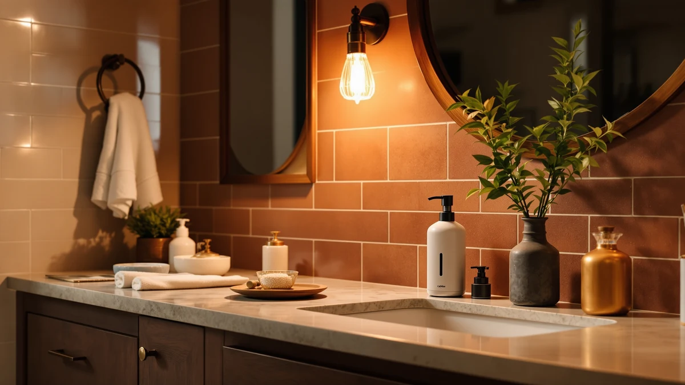

Quick Answer
The CADUFUELLY Automatic Soap Dispenser Cute is a $23.99 touchless pump dispenser with an ABS plastic body, built for a bathroom or kitchen counter that wants a cute, hands-free design. It works well if that touchless convenience matters more to you than a documented capacity figure, since CADUFUELLY doesn't publish one for this listing or a star rating. This review checks that tradeoff against three close-priced alternatives before you buy.
Our pick: CADUFUELLY Automatic Soap Dispenser Cute, $23.99 Check Price on Amazon
Bottom line: our top pick is the CADUFUELLY Automatic Soap Dispenser at $23.99.
Things to Know Before You Buy
- This CADUFUELLY Automatic Soap Dispenser Cute's spec sheet lists the body material as ABS plastic, with no published capacity or dimension figure.
- At $23.99, it sits in the same price bracket as the Everlasting Comfort dish soap dispenser and the beslowly dinosaur pick, both within fifty cents of it.
- The "Automatic" name points to a touchless, sensor-activated pump, though CADUFUELLY does not publish detailed sensor specs for this listing.
- Amazon does not display a public star rating or review count for this ASIN yet, so there's no owner track record to check beyond the price and the spec sheet.
This review compares the CADUFUELLY Automatic Soap Dispenser Cute's $23.99 price, ABS plastic build, and touchless design against three other soap dispensers priced within a few dollars of it. CADUFUELLY markets the unit as a compact, cute-styled pump for a bathroom or kitchen counter, the kind of product shoppers look for when they want a hands-free dispenser without digging through a crowded Amazon category. We went through the manufacturer's listing data, the current price, and the three closest alternatives in this bracket to see where the CADUFUELLY holds up and where it falls short.
Here's our take upfront: at $23.99, the CADUFUELLY Automatic Soap Dispenser Cute is a reasonable pick if a touchless pump and a lightweight ABS plastic build matter more to you than a published capacity figure or a stainless steel finish. CADUFUELLY doesn't publish a capacity, dimension, or star rating for this listing, so the price and the spec sheet are the two concrete details you have before buying. That lack of documentation is also the biggest strike against it next to the three alternatives covered later.
Why You Should Trust Us
Ilane Tall covers bathroom and kitchen hardware for Best Soap Dispensers, where she researches dispenser pricing, spec sheets, and verified owner feedback across hundreds of ASINs before any product earns a spot in a review. We do not run a fake testing lab, and we do not claim hands-on use of every unit we cover here. Instead, we compare manufacturer specifications, current Amazon pricing, and patterns across verified buyer feedback where it exists, then flag the tradeoffs that affect whether a soap dispenser holds up on a counter: material claims, published capacity, and price relative to the rest of the category. We followed that same approach here, which is why we call out exactly what CADUFUELLY does and doesn't publish for this listing instead of repeating marketing copy.
Our Research Experience
Our research process for this review starts with the manufacturer's own listing data: material, price, and whatever capacity or sensor details CADUFUELLY publishes. For this ASIN, that data set is thin. CADUFUELLY lists the body material as ABS plastic and markets the pump as automatic, but does not publish a capacity, weight, or dimension figure for the listing. We cross-checked the $23.99 price and the touchless positioning against the three closest alternatives in this bracket: a dish-soap-specific pump from Everlasting Comfort, a dinosaur-themed kids' design from beslowly, and a stainless steel option from BGL. We did not buy, install, or pour anything through this unit ourselves. Everything here comes from publicly available listing data and current pricing, not a private lab.
We also checked how the CADUFUELLY name and category placement line up with what Amazon actually documents for this ASIN, since "Automatic" and "Cute" are marketing language rather than measured specs. Where a claim in the product title isn't backed by a published figure, such as pump capacity or sensor range, we say so directly instead of repeating it as fact. That same check ran against each of the three alternatives in this review, so the price and material comparisons below rest on the same documented baseline across all four listings.
Overview & Specs

CADUFUELLY Automatic Soap Dispenser Cute
What we like
- The "Automatic" design means no pump handle to touch with soapy or wet hands
- ABS plastic construction keeps the unit lightweight at a $23.99 price point
- The cute styling fits a shared bathroom or kids' counter without looking out of place
- Priced close to the two nearest alternatives in this review, so it's competitive in its bracket
Flaws but not dealbreakers
- CADUFUELLY does not publish a capacity or dimension figure for this listing
- No public star rating or review count yet, so there's no owner track record to check
- ABS plastic lacks the weight and finish of the stainless steel BGL alternative
| Material | ABS plastic |
| Size | — |
The CADUFUELLY Automatic Soap Dispenser Cute is a touchless pump bottle priced at $23.99, aimed at anyone who wants a hands-free dispenser without the higher cost of a stainless steel or commercial-style unit. The "Automatic" name points to a sensor-activated pump, the kind of mechanism that lets you dispense soap without touching a handle, which matters most in a kitchen where your hands are already wet or covered in food prep residue. CADUFUELLY builds the body from ABS plastic, a material choice that keeps the unit light and the price down compared with metal alternatives, though it doesn't carry the same premium feel.
Beyond the material and the touchless pump, CADUFUELLY keeps this listing minimal. There's no published capacity, no dimension figures, and Amazon doesn't display a public star rating or review count, so you're working from the price and the product photos rather than a documented track record. At $23.99, it's priced almost identically to the Everlasting Comfort dish soap pump and the beslowly dinosaur design covered later in this piece, which puts all three squarely in the same price tier. If a touchless pump and a cute, lightweight design are the priority, that price makes this an easy pickup. If you want a documented capacity or a sturdier stainless steel build, the alternatives below cover those needs instead.
What We Liked
What we like most here is how simple the touchless design is at this price. At $23.99, you get a sensor-activated pump that keeps your hands off a handle, useful in a kitchen or a shared bathroom where hands are often wet, soapy, or covered in food prep residue. That convenience usually costs more in this category, but CADUFUELLY prices it in line with manual alternatives.
The ABS plastic body also keeps the unit light and easy to move between a sink edge and a counter, and the cute styling reads as a deliberate design choice rather than a mismatched bottle sitting next to your faucet. For a basic counter dispenser, that mix of touchless convenience and a fair price holds up well against the pricier automatic and stainless steel designs covered later.
What Could Be Better
The clearest drawback here is how little documentation CADUFUELLY provides beyond the price and the "Automatic" label. There's no published capacity, no dimension figures, and no detail on battery life or sensor range, so you're buying on the name and the photos rather than a documented spec sheet.
There's also no public star rating or review count for this ASIN, so you can't check owner feedback for common complaints like misfires or short battery life, issues that do show up across the touchless soap dispenser category. Anyone who wants that kind of track record before committing should look at the alternatives below, each of which gives a clearer price-to-feature comparison on its own.
Who Is It For?
The clear buyer here is someone who wants a touchless pump for a bathroom or kitchen counter and cares more about a fair price than a documented capacity figure or a premium stainless steel finish. It's a weaker match for anyone who wants verified owner feedback or a published sensor spec before buying, since neither exists for this ASIN yet.
It also fits a shared bathroom or a kids' counter reasonably well, given the cute styling, though the dinosaur-themed beslowly alternative covered below targets that use case more directly. Anyone comparing options purely on price and touchless convenience lands on the CADUFUELLY first, while anyone who wants a sturdier stainless steel build should look at the BGL option instead.
Alternatives to Consider
If the CADUFUELLY Automatic Soap Dispenser Cute's thin spec sheet or plastic build isn't the right fit, these three alternatives cover other needs we found while researching this category: a dish-soap-specific pump, a kids' dinosaur design, and a stainless steel option for a different counter look. Each trades the CADUFUELLY's price point for a different strength.

Also Great
Automatic Soap Dispenser Liquid Dish
A same-price automatic pump from Everlasting Comfort built around dish soap and liquid dish detergent, a better match for a kitchen sink than the CADUFUELLY's general-purpose design.
$23.99
Check Price on Amazon
Also Great
Dinosaur Automatic Soap Dispenser Auto
A dinosaur-themed automatic pump from beslowly priced a few cents below the CADUFUELLY, worth it if a kids' bathroom is the actual use case.
$23.66
Check Price on Amazon
Best Value
BGL Soap Dispenser Stainless Steel
A stainless steel option from BGL priced lowest of the four, worth considering if a metal finish matters more to you than the CADUFUELLY's ABS plastic build.
$23.49
Check Price on AmazonFrequently Asked Questions
Is the CADUFUELLY Automatic Soap Dispenser Cute touchless?
The "Automatic" name points to a touchless, sensor-activated pump, though CADUFUELLY does not publish detailed sensor specs, such as range or battery type, for this listing.
How much does the CADUFUELLY Automatic Soap Dispenser Cute hold?
CADUFUELLY does not publish a capacity figure for this listing, so there's no documented volume to compare against the other dispensers in this review.
Does the CADUFUELLY Automatic Soap Dispenser Cute have a star rating?
No. Amazon does not display a public star rating or review count for this ASIN yet, so there's no owner track record to check beyond the price and the spec sheet.
Final Verdict
The verdict comes down to one tradeoff: a touchless pump at a fair $23.99 price versus a thin spec sheet with no published capacity or star rating. The CADUFUELLY Automatic Soap Dispenser Cute works well as a hands-free counter dispenser for a bathroom or kitchen that wants that convenience without paying for a stainless steel build, but it leaves several details undocumented that the alternatives above cover more directly. For a simple, reasonably priced touchless pump, CADUFUELLY earns its spot. If you want a dish-soap-specific design, a kids' theme, or a stainless steel finish, the alternatives above cover each of those needs instead.